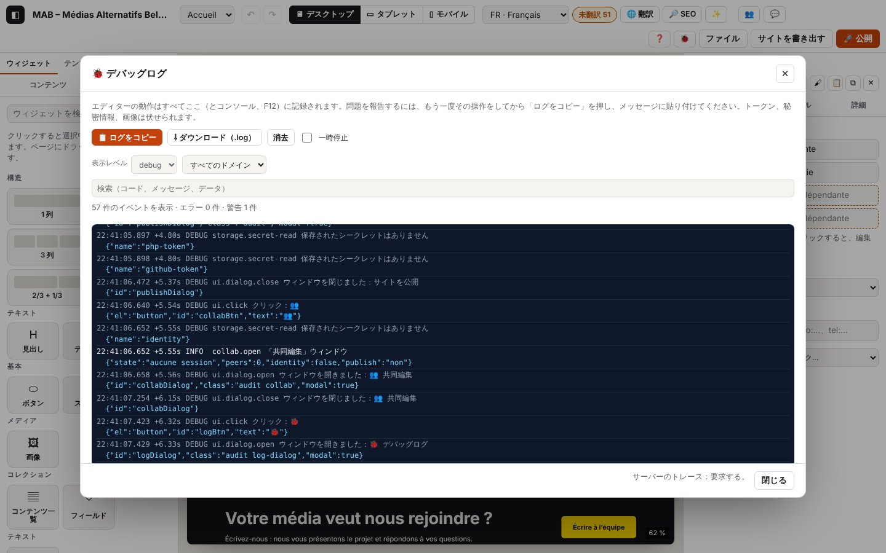

0. デバッグログ

このページの内容
以下のログ抜粋はフランス語で記録したものです。コードとレベルはどの言語でも同じです（実際のログのメッセージは表示言語で出ます）。
Atelier は自分の動作をすべて記録します。記録先はブラウザーのコンソール（F12）、🐞 デバッグログウィンドウ、そしてホスティング上では publish.php が書くサーバーのログです。この章では、これらのログの取り出し方、読み方、設定のしかたを説明します。
ログのドメイン：boot.*（起動）、log.*（ログそのもの）、app.*（ブラウザーのエラーとイベント）、ui.*（あなたの操作：クリック、フィールド、ウィンドウ、ショートカット、メッセージ）、net.*（ネットワーク通信）、perf.*（処理の遅れ）、php.*（publish.php から届いた行）。
まとめて確認する：アドレスの末尾に
?autotestを付けてエディターを開きます（またはコンソールでautotest()と入力するか、Ctrl+K で「セルフテスト」）。このガイドのユースケースが再実行され、コピーできる状態のレポートが表示されます。終わるとプロジェクトは元の状態に戻ります（第15章）。
0.1 問題を報告するためにログをコピーする
目的：問題を理解するのに必要なものを、1 回の貼り付けで送ること。
手順
- 問題が起きる操作をもう一度行います（その前にページを再読み込みする必要はありません。ログはエディターを開いてからの直近 5000 件のイベントを保持しています）。
- 上部バーの 🐞 をクリックします（または Ctrl+Alt+J、または Ctrl+K で「ログ」）。
- 📋 ログをコピー をクリックし、メッセージに貼り付けます。ブラウザーがコピーを拒否した場合は ⇩ ダウンロード（.log） をクリックし、そのファイルを添付してください。
表示される内容：「🐞 デバッグログ」ウィンドウに、リアルタイムの行（直近 500 行）と、エラーと警告の件数が表示されます。🐞 の上の赤いバッジは、起動してからのエラーの数です。
期待されるログ（実際の抜粋、ui.* の行を含む：journaux/journal-fenetre.log）
技術的な詳細：想定されるログ
04:38:02.233 +2.66s DEBUG ui.click Clic : 🐞1 {"el":"button","id":"logBtn","text":"🐞1"}
04:38:02.236 +2.67s DEBUG ui.dialog.open Fenêtre ouverte : 🐞 Journal de débogage {"id":"logDialog","class":"audit log-dialog","modal":true}
04:38:02.686 +3.12s DEBUG ui.click Clic : 📋 Copier le journal {"el":"button","text":"📋 Copier le journal","data":{"logCopy":""},"dialog":"logDialog"}
04:38:02.709 +3.14s WARN log.copy-fail Copie refusée par le navigateur : utilisez « Télécharger » {"error":"Failed to execute 'writeText' on 'Clipboard': Write permission denied."}
04:38:03.116 +3.54s DEBUG ui.click Clic : ⇩ Télécharger (.log) {"el":"button","text":"⇩ Télécharger (.log)","data":{"logDownload":""},"dialog":"logDialog"}
04:38:03.136 +3.56s INFO log.download Journal téléchargé {"chars":3603}通常の Chrome ではコピーは成功し、log.copy（INFO）にコピーした文字数と追加されたサーバーの行数が記録されます。ここではテスト用のブラウザーにクリップボードへの書き込み権限がないため、log.copy-fail のパターンになっています。
コピーされたテキストは、まず環境、続いてイベントの順に並びます：
=== Journal Atelier ===
atelier : cycle 16 · publish.php attendu v4
date : 2026-10-29T03:38:03.134Z
fuseau : Asia/Tokyo
adresse : https://…/atelier/index.html
navigateur : Google Chrome 148, Chromium 148
plateforme : macOS
langues : fr-BE, fr, ja
écran : 1728×1117 · fenêtre 1440×900 · ×2
machine : 10 cœurs · 8 Go
réseau : en ligne · 4g
stockage : 41 Mo utilisés sur 299 Go
journal : console debug · tampon debug · trace serveur oui
projet : {"nom":"MAB – Médias Alternatifs Belges","langues":["fr","nl","de","en"],"pages":2,"éléments":57,…}
éditeur : {"page":"p_zdmisxft","langue":"fr","appareil":"desktop","sélection":null,"édition":"page",…}
ia : {…} (chapitre 7)
collaboration : {…} (chapitre 10)
événements : 214 · erreurs : 0 · avertissements : 1
04:23:19.490 +0.00s INFO boot.log Journal prêt …ほかのパターン
| 状況 | 変わること | ログ |
|---|---|---|
| コピーが受け付けられた | 「ログをコピーしました。メッセージに貼り付けてください。」 | log.copy（INFO）{"chars":…, "server":…} |
| コピーが拒否された（ブラウザー、タブが非アクティブ） | 「ブラウザーがコピーを拒否しました。「ダウンロード」を使ってください。」 | log.copy-fail（WARN） |
| コピーの代わりにファイルにする | atelier-journal-AAAA-MM-JJ-HH-MM-SS.log というファイルがダウンロードされます | log.download（INFO） |
| もう一度試す前にゼロからやり直す | 「消去」でバッファーが空になり、カウンターがゼロに戻ります | log.clear（INFO） |
| コピーの前にサーバーのログを読み込んだ | その行が末尾の「=== サーバーのログ（publish.php）===」の下に追加されます | 0.4 を参照 |
エラー
| 状況 | 表示されるメッセージ | ログ | 対処 |
|---|---|---|---|
| 🐞 ボタンが表示されず、エディターが真っ白のまま | なし、または半分だけ表示されたエディター | コンソールのみ：[Atelier] boot.error …、boot.resource、boot.rejection、15 秒後に boot.timeout（ERROR） | コンソール（F12）を開き、[Atelier] の行をすべてコピーします（0.2 を参照） |
0.2 コンソール（F12）でログを読む
目的：ログをリアルタイムで追うこと、またはエディターが起動しないときにログを取り出すこと。
手順
- 開発者ツールを開きます：F12（Mac では Cmd+Option+I）、Console（コンソール）タブ。
- フィルターに
[Atelier]と入力すると、Atelier の行だけが表示されます。 - まとめてコピーするには、
atelierDebug.copy()と入力して Enter を押します（環境を含む全文がクリップボードに入ります）。またはatelierDebug.download()。
表示される内容：各行は色付きの [Atelier] で始まります：灰色（DEBUG）、青（INFO）、オレンジ（WARN）、赤（ERROR）。DEBUG の行はコンソールの「情報」（Info）レベルで表示されます（「詳細」（Verbose）を有効にする必要はありません）。TRACE の行は「詳細」レベルでのみ表示されます。エラーの場合は行の後に Error オブジェクトが続きます。クリックすると、コードへのリンク付きの呼び出し履歴（スタック）が見られます。
コンソールのコマンド
| コマンド | 効果 |
|---|---|
atelierDebug.copy() | ログ全体（環境＋イベント）をコピーします |
atelierDebug.download() | ログを .log でダウンロードします |
atelierDebug.dump() | ログ全体をコンソールに表示し、戻り値として返します |
atelierDebug.dump({ level: 'warn' }) | 警告とエラーだけ（フィルター：level、scope、text、flow） |
atelierDebug.entries({ scope: 'publish' }) | 1 つのドメインのイベントをオブジェクトの形で返します |
atelierDebug.level('trace') | コンソールとバッファーを TRACE（すべて）にします。コンソールを静かにするには atelierDebug.level('info') |
atelierDebug.clear() | ログを空にします |
ページのほかのエラーメッセージ（ライブラリ、ブラウザー）のうち console.error や console.warn を通るものは、app.console（ERROR または WARN）というコードでログに写されます。
0.3 詳しさのレベルを設定する
目的：もっと多く（または少なく）詳細を見ること。
手順
- 🐞 →「ログの設定」：コンソール（F12）のレベルとメモリに保持するレベル（trace、debug、info、warn、error。
offでコンソール出力を止めます）、そして publish.php にトレースを要求。 - またはエディターのアドレスで：
?debug（コンソールを DEBUG に）、?trace（すべて、とても多い）、?quiet（コンソールは WARN のみ）。この設定はこのデバイスに保存されます（localStorage['atelier-log']）。
テスト期間中の既定値：コンソールとメモリは DEBUG、サーバーのトレースは要求する。
期待されるログ
技術的な詳細：想定されるログ
04:38:03.413 +3.84s INFO log.settings Réglages du journal modifiés {"console":"debug","keep":"debug","server":true}起動時の最初の行に、現在の設定が記録されます：
技術的な詳細：想定されるログ
04:37:57.581 +0.00s INFO boot.log Journal prêt {"console":"debug","keep":"debug","aide":"atelierDebug.copy() ou le bouton 🐞"}各レベルで増えるもの
| レベル | 追加される内容 |
|---|---|
| WARN | 異常とエラーだけ |
| INFO | 目に見える段階：起動、作業用ウィンドウを開く、公開、書き出し、元に戻す／やり直す… |
| DEBUG | すべての変更（store.commit）、選択、クリック、フィールド、ウィンドウ、ネットワーク通信、ローカル保存、サーバーのトレース |
| TRACE | 要素へのマウスオーバー（store.hover）、共同編集のメッセージボックスの毎秒の確認、メッセージの分割… |
0.4 サーバーのログ（publish.php）を読む
目的：publish.php がホスティング上で行ったこと（公開、お問い合わせフォーム、共同編集）を見ること。エディターを開いていなかったときのことも含みます。たとえば、メッセージが届かなかった訪問者の件などです。
手順
- publish.php のバージョン 4 が必要です（🚀 公開 →「⇩ publish.php をダウンロード」、それを FTP で置き直します：第8章を参照）。
- 🐞 →「サーバーのログ（publish.php）」。アドレスとトークンは公開ウィンドウから引き継がれます（「このデバイスに記憶する」にチェックが入っている場合）。そうでなければ入力してください。
- サーバーのログを読み込む：直近 300 行が表示され、「ログをコピー」の内容に追加されます。
表示される内容：AAAA-MM-JJTHH:MM:SS.mmmZ レベル コード [req 参照番号 · 所要時間] メッセージ {データ} という形の行が、UTC 時刻で並びます。
期待されるログ（ブラウザー：journaux/journal-serveur.log）
技術的な詳細：想定されるログ
04:38:09.041 +9.47s INFO log.server.start [log.server#1] Lecture du journal du serveur {"url":"http://127.0.0.1:9501/publish.php","lines":300}
04:38:09.041 +9.47s DEBUG net.request GET 127.0.0.1:9501/publish.php {"id":13,"method":"GET","url":"http://127.0.0.1:9501/publish.php?logs=300&atelier_debug=1"}
04:38:09.068 +9.50s DEBUG net.response 200 GET 127.0.0.1:9501/publish.php (27 ms) {"id":13,"status":200,"ms":27,"type":"application/json","req":"57fda4cd"}
04:38:09.070 +9.50s INFO log.server.ok [log.server#1 · 29 ms] 10 lignes du serveur {"lines":10,"files":["log-2026-10.php"]}
04:38:09.071 +9.50s INFO php.logs.read Journal du serveur lu depuis l’éditeur {"lines":10,"files":1,"req":"57fda4cd","srvMs":0.2}そして「サーバーのログ」の枠の中（抜粋：journaux/php-journal-contact.log）：
技術的な詳細：想定されるログ
2026-10-29T03:39:49.400Z INFO php.contact.sent [req 8e07b221 · 0.6 ms] E-mail remis au serveur d’envoi de l’hébergement {"form":"n_5s081k324w","to":"re…@media-alternatif.be","from":"noreply@127.0.0.1","fields":3,"reply_to":true}
2026-10-29T03:39:49.400Z INFO php.req.end [req 8e07b221 · 0.6 ms] Réponse 200 (contact) {"status":200,"route":"contact","mem_kb":365}どこに、何を：publish.php は atelier-data/log-AAAA-MM.php に書き込みます（1 か月に 1 ファイル。先頭に 404 を返す命令があるので Web からは読めません。さらにフォルダーは .htaccess で保護されています）。2 MB を超えるとファイルは log-AAAA-MM.old.php になり、新しいファイルが始まります。既定では INFO 以上を記録します。すべて記録するには、publish.php の const LOG_LEVEL = 'info'; を 'debug' に変えてください（注意：その場合、共同編集で参加者ごとに毎秒 1 行が増えます）。警告とエラーは、ホスティングが PHP のエラーログ（error_log）を残している場合、そちらにも書かれます。
サーバーのログに決して書かれないもの：トークン、お問い合わせメッセージの内容、公開したファイルの内容、IP アドレス（短い識別子 who だけを記録し、同じ訪問者なら同じ値になります）。メールアドレスは省略されます（re…@exemple.be）。
ほかのパターン
| 状況 | 変わること | ログ |
|---|---|---|
| トレースを要求（既定の設定） | publish.php がエディターに返す各応答にそのリクエストのトレースが含まれ、ブラウザーのログの net.response の直後に php ドメインとして写されます | php.req.start、…、php.req.end。それぞれに req と srvMs（サーバー側の所要時間）が付きます |
| トレースを要求しない（チェックを外した、またはログが INFO） | ブラウザーの行だけ | ブラウザーのログに php.* は出ません。サーバーのログは 0.4 の方法で引き続き読めます |
| 古い publish.php（バージョン 3 以前） | トレースの要求を無視します。ログの読み込みは、バージョン 4 を求めるメッセージとともに失敗します | log.server.fail（ERROR） |
エラー
| 状況 | 表示されるメッセージ | ログ | 対処 |
|---|---|---|---|
| トークンが違う | 「サーバーのログを読み取れません：publish.php がトークンを拒否しました。」（1 秒後。publish.php は試行をわざと遅くしています） | net.response 401（WARN）、log.server.fail（ERROR）、サーバー側では php.logs.denied（WARN） | 公開で使っているトークン（置いてある publish.php のもの）を入れ直します |
| アドレスまたはトークンがない | 「publish.php のアドレスが不明です…」／「公開トークンがありません…」 | log.server.fail（ERROR） | 🚀 公開 でアドレスを設定し、「記憶する」にチェックします |
| publish.php のバージョンが 3 | 「…サーバーのログにはバージョン 4 が必要です（🚀 公開 で新しい publish.php をダウンロードしてください）。」 | log.server.fail（ERROR） | publish.php をダウンロードし直して置き直します（新しいトークン） |
| サーバーに接続できない | 「… Failed to fetch」 | net.fail（ERROR）、log.server.fail（ERROR） | 第8章の「接続をテスト」を参照 |
トークンが違う場合の実際の抜粋：journaux/journal-serveur.log
技術的な詳細：想定されるログ
04:38:09.382 +9.81s INFO log.server.start [log.server#2] Lecture du journal du serveur {"url":"http://127.0.0.1:9501/publish.php","lines":300}
04:38:10.406 +10.84s WARN net.response 401 GET 127.0.0.1:9501/publish.php (1025 ms) {"id":14,"status":401,"ms":1025,"type":"application/json","req":"ef76576c"}
04:38:10.408 +10.84s ERROR log.server.fail [log.server#2 · 1026 ms] Jeton refusé par publish.php. {"error":{"name":"Error","message":"Jeton refusé par publish.php.",…}}
04:38:10.409 +10.84s WARN php.logs.denied Lecture du journal refusée : jeton faux {"req":"ef76576c","srvMs":0.1}
04:38:10.409 +10.84s WARN php.req.end Réponse 401 (logs) {"status":401,"route":"logs","mem_kb":353,"req":"ef76576c","srvMs":1000.3}0.5 ログが自動で記録するもの
特別なことをしなくても、エディターのあらゆる場所で次のイベントが記録されます。後の章では、手順の一部になっているときにこれらを取り上げます。
あなたの操作（ui.*、DEBUG）
| コード | タイミング | データ |
|---|---|---|
ui.click | ボタン、リンク、タブ、チェックボックス、ラベル、キャンバスの要素をクリックしたとき | 要素、id、短いテキスト、data-* 属性、その要素があるウィンドウ |
ui.change | フィールド、リスト、チェックボックスを変更したとき | フィールド名、短い値（80 文字）。パスワードやトークンの値は決して記録しません（[masqué]）。ファイルなら名前、種類、サイズ |
ui.key | Ctrl、Cmd、Alt を使ったショートカット、および Esc、Delete、F1、F2、F5、F12（入力した文字は決して記録しません） | キーの組み合わせ（Ctrl+Z）、フォーカスのあった場所 |
ui.dialog.open、ui.dialog.close | ウィンドウが開いた、または閉じたとき | タイトル、id |
ui.menu | 「ファイル」メニューが開いた、または閉じたとき | id、open |
ui.toast | 画面下部にメッセージが表示されたとき（INFO。警告やエラーのメッセージなら WARN または ERROR） | メッセージのテキスト |
ブラウザー（app.*、perf.*）
| コード | レベル | タイミング |
|---|---|---|
app.uncaught | ERROR | 処理されなかった JavaScript のエラー（Atelier のバグです：ログを送ってください） |
app.rejection | ERROR | 処理されずに拒否された Promise（同上） |
app.resource | ERROR | ファイル（スクリプト、スタイル、画像）が読み込めない |
app.csp | ERROR | ページのセキュリティポリシーによってブロックされたコンテンツ |
app.console | ERROR / WARN | ほかのスクリプトがコンソールに出したエラーや警告のメッセージ |
app.offline、app.online | WARN / INFO | 接続が切れた／戻った（エディターはオフラインのまま動き続けます） |
app.visibility | DEBUG | タブが隠れた、またはふたたび表示された |
app.leave | INFO | ページが閉じる、または再読み込みされる（エラーの件数付き） |
app.storage-event | DEBUG | Atelier の別のタブが設定を変更した |
perf.longtask | DEBUG | 画面が 200 ms 以上固まった（処理の遅れ） |
実際の抜粋（テストでわざと起こしたエラー：journaux/erreurs-globales.log）
技術的な詳細：想定されるログ
04:38:03.451 +3.88s ERROR app.uncaught Uncaught Error: erreur-de-test-volontaire {"file":"","line":1,"col":34,"error":{"name":"Error","message":"erreur-de-test-volontaire","stack":"Error: erreur-de-test-volontaire\nat eval …"}}
04:38:03.451 +3.88s ERROR app.rejection Promesse rejetée sans traitement : erreur-de-test-volontaire (promesse) {"error":{…}}
04:38:03.455 +3.88s ERROR app.resource Fichier non chargé : http://localhost:8791/introuvable-erreur-de-test.png {"tag":"img","url":"http://localhost:8791/introuvable-erreur-de-test.png"}
04:38:03.960 +4.39s WARN app.offline Connexion perdue : l’éditeur continue hors ligne
04:38:04.162 +4.59s INFO app.online Connexion rétablieネットワーク（net.*）
| コード | レベル | タイミング | データ |
|---|---|---|---|
net.request | DEBUG（共同編集の確認では TRACE） | リクエストを送ったとき | id、メソッド、アドレス（秘密情報は伏せる）、本文の要約（フィールド名、サイズ） |
net.response | 成功した GET は DEBUG、成功した送信は INFO、4xx は WARN、5xx は ERROR | 応答が届いたとき | id、status、ms、種類、サイズ、req（publish.php の参照番号） |
net.fail | ERROR（ローカルの読み込みでは WARN） | 応答がないとき：ネットワークの切断、サーバーに接続できない、または CORS の許可がない応答 | id、アドレス、ms、online、エラー |
net.recovered | INFO | 共同編集のメッセージボックスが、失敗の後にふたたび応答したとき | アドレス、失敗の回数 |
共同編集のメッセージボックスの確認（毎秒 1 回のリクエスト）では、最初の失敗は WARN、その後の失敗はログが埋もれないように TRACE になり、復帰すると net.recovered が知らせます。アドレスの中のルーム ID は 8 文字に短縮されます（signal=ab12cd34…）。
ほかに詳しい説明のない「Failed to fetch」は、ブラウザーが使えるものを何も受け取らなかったという意味です。セキュリティ上の理由から、ブラウザーはその理由を教えてくれません。考えられる原因は、可能性の高い順に：アドレスの間違いまたはファイルがない（ホスティングのエラーページはエディターに読み取りを許可しません）、PHP が実行されていない、サーバーまたはネットワークに接続できない、です。そのアドレスをタブで開いてみてください。publish.php なら {"atelier":true,…} と表示されるはずです。
伏せ字：データは書き込まれる前にフィルターを通ります。トークン、秘密情報、パスワード、秘密鍵 → [masqué]。アドレスの token、secret、key、code パラメーターとフラグメント #join=… → [masqué]。data: 形式の画像 → 種類とサイズだけ。メールアドレス → re…@exemple.be。テキストは 300 文字、リストは 20 項目で切り詰めます。
0.6 公開したサイトをデバッグする
公開したサイトにも小さな専用ログがあり、訪問者に対しては既定で何も出力しません。
手順
- アドレスの末尾に
?atelier-debugを付けてサイトのページを開きます（例：https://www.média-alternatif.be/contact/?atelier-debug）。この設定はこのデバイスで有効なままになります。 - コンソール（F12）：行は [Atelier site] で始まります。
- 止めるには：
?atelier-debug=0。
site.* コードの詳細は第9章にあります。
この章のコード
| コード | レベル | 意味 |
|---|---|---|
app.console | ERROR / WARN | ほかのスクリプトのエラーメッセージを写したもの |
app.csp | ERROR | セキュリティポリシーによってブロックされたコンテンツ |
app.leave | INFO | ページを閉じた、または再読み込みした |
app.offline | WARN | 接続が切れた |
app.online | INFO | 接続が戻った |
app.rejection | ERROR | 処理されずに拒否された Promise |
app.resource | ERROR | ファイルを読み込めなかった |
app.storage-event | DEBUG | 別のタブが設定を変更した |
app.uncaught | ERROR | 処理されなかった JavaScript のエラー |
app.visibility | DEBUG | タブが隠れた、または表示された |
boot.error、boot.resource、boot.rejection | ERROR | 読み込み中、完全なログの準備ができる前のエラー |
boot.log | INFO | ログの準備完了（設定付き） |
boot.timeout | ERROR | エディターが 15 秒以内に起動しなかった（サイクル 20 以降、フォントが遅いだけではこれは出なくなりました：第2章の canvas.resources-slow を参照） |
log.clear | INFO | ログを消去した |
log.copy | INFO | ログをコピーした |
log.copy-fail | WARN | ブラウザーがコピーを拒否した |
log.download | INFO | ログをダウンロードした |
log.server.start、log.server.ok、log.server.fail | INFO / INFO / ERROR | サーバーのログの読み込み |
log.settings | INFO | ログの設定を変更した |
net.fail | ERROR | 応答のないリクエスト（共同編集の確認では最初の失敗が WARN、その後は TRACE） |
net.recovered | INFO | メッセージボックスにふたたび接続できた |
net.request | DEBUG / TRACE | リクエストを送った |
net.response | DEBUG〜ERROR | 応答を受け取った |
perf.longtask | DEBUG | 画面が 200 ms 以上固まった |
php.logs.denied | WARN | （サーバー）ログの読み込みを拒否した |
php.logs.read | INFO | （サーバー）エディターからログが読み込まれた |
ui.change | DEBUG | フィールドを変更した |
ui.click | DEBUG | クリック |
ui.dialog.close | DEBUG | ウィンドウを閉じた |
ui.dialog.open | DEBUG | ウィンドウを開いた |
ui.key | DEBUG | キーボードショートカット |
ui.menu | DEBUG | メニューを開いた、または閉じた |
ui.toast | INFO / WARN / ERROR | メッセージを表示した |